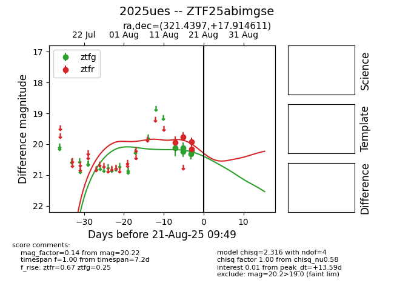

Target 2025ues at 2025-08-21 09:49, see:
FINK: fink-portal.org/ZTF25abimgse
Lasair: lasair-ztf.lsst.ac.uk/objects/ZTF25abimgse
ALeRCE: alerce.online/object/ZTF25abimgse
TNS: wis-tns.org/object/2025ues
YSE: ziggy.ucolick.org/yse/transient_detail/2025ues
alt names
ZTF25abimgse (ztf,alerce)
2025ues (tns,yse)
coordinates:
equatorial (ra, dec) = (321.4397,+17.91461)
galactic (l, b) = (69.1281,-22.81989)
photometry
last ztfg=20.22, ztfr=19.92
5 ztfg, 4 ztfr detections
